The story is a scroll-driven demo site. It follows one alert from the moment it fires to the rule that retires it, and the person who signs for it. This page explains how it works in plain terms: the one idea everything hangs on, the handful of techniques on top of it, and how to change it without breaking it.
1timeline drives the whole film
10scenes · 8 captioned chapters
~15screens of scrolling, start to end
0videos: it's all live HTML
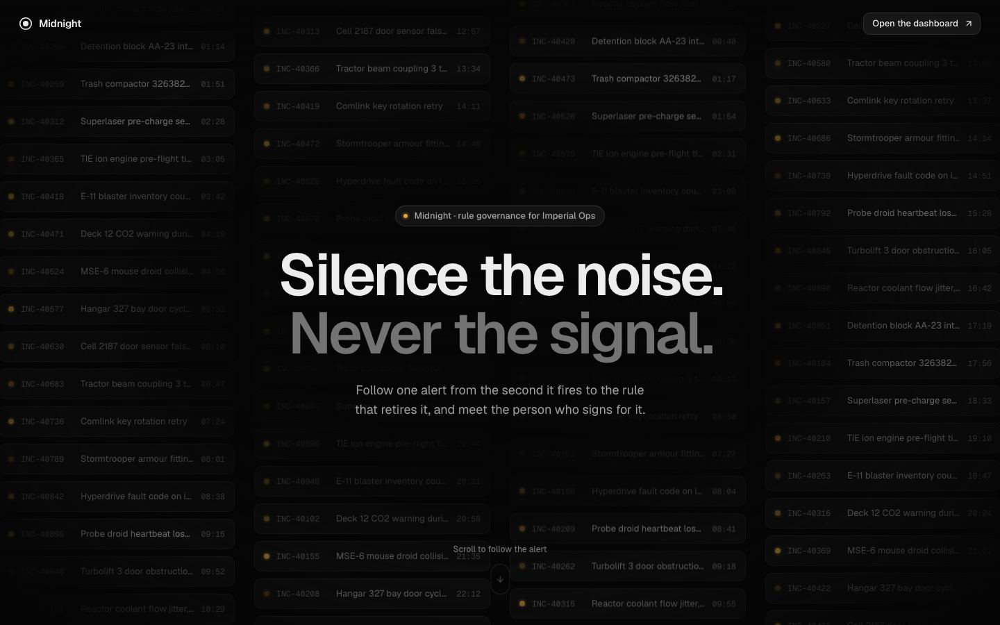
The opening frame. Everything behind the headline is real HTML (76 alert rows), not an image, so the camera can later fly into one of them.
i
The 30-second version
The page is a film whose play button is the scroll bar. We wrote the whole film as one animation timeline with GSAP. ScrollTrigger pins the screen in place and moves the timeline forwards and backwards as you scroll. Every "scene" is a real piece of UI drawn on a fixed-size canvas, so we can point a virtual camera at any part of it.
Run it with cd midnight-story && npm install && npm run dev, then open localhost:5189. Paths on this page, like timeline/kit.ts, are inside midnight-story/src/story/ unless they start with src/.
01
The story, chapter by chapter
What the viewer sees, and what the scroll does in each part.
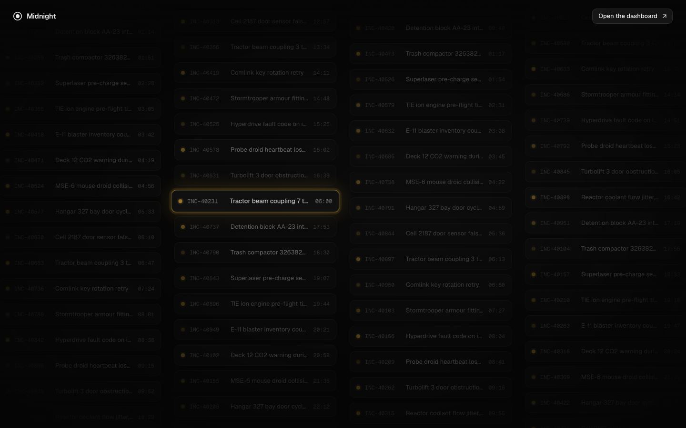
Opening. A wall of live alerts. One fires (amber halo) and the camera dives into it.
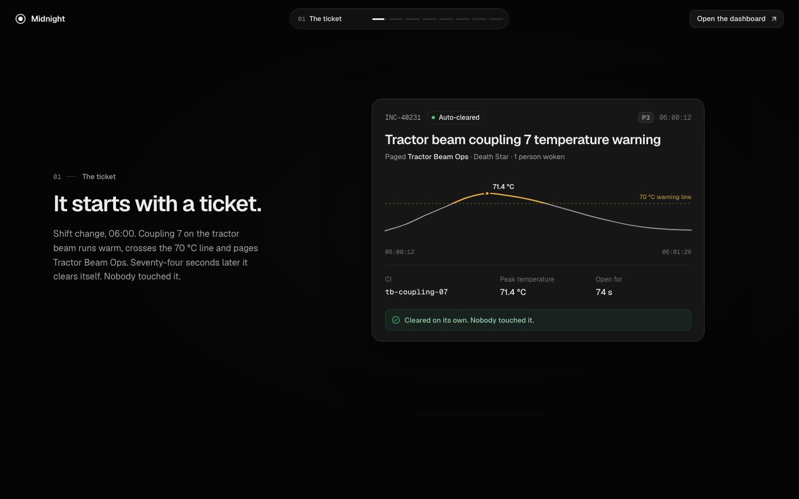
1 · The ticket. Temperature crosses 70 °C, a timer runs to 74 s, and it clears itself. Nobody touched it.
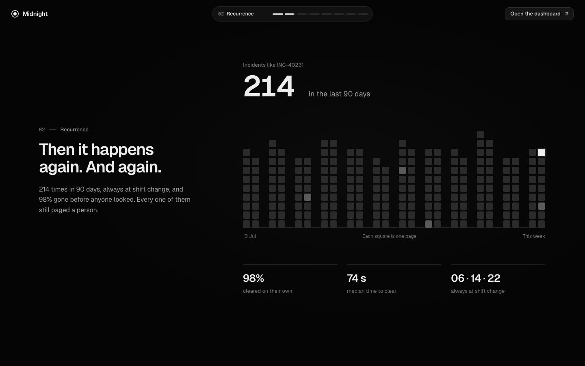
2 · Recurrence. The ticket shrinks into one square; 213 more rain in and stack into weeks.
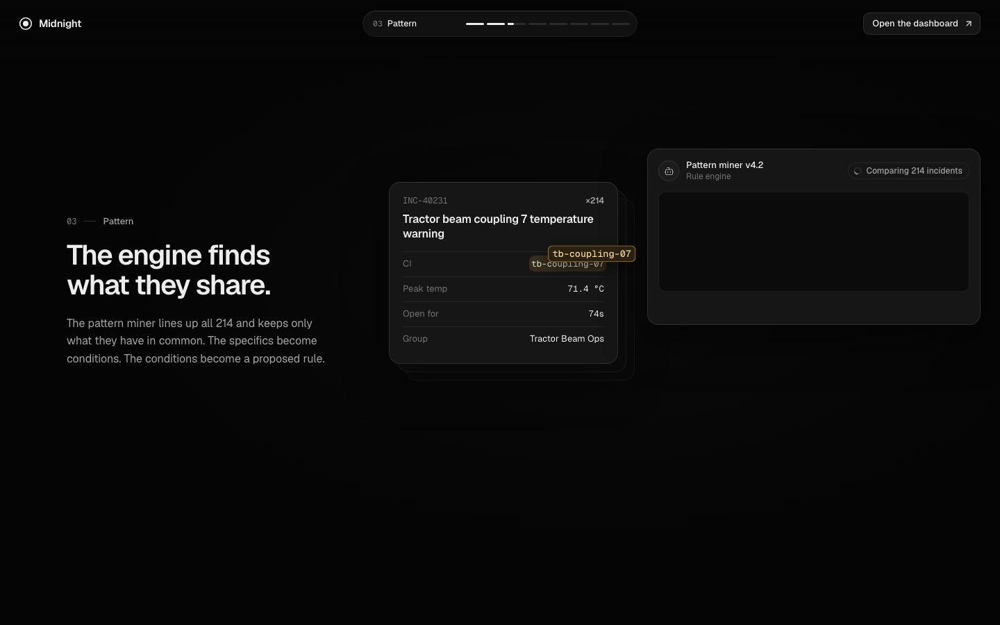
3 · Pattern. Values lift off the ticket, fly into a query, and scramble into general conditions.
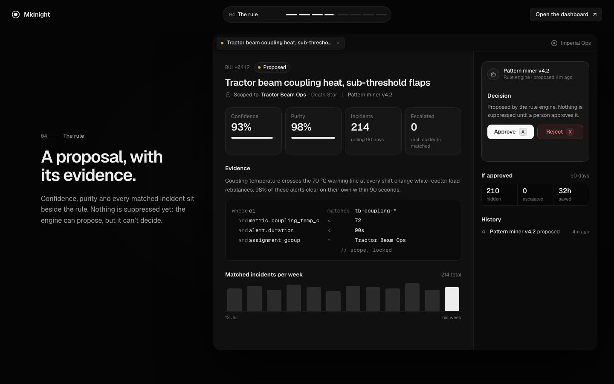
4 · The rule. The query flies into the real rule page, which builds around it. Numbers count up.
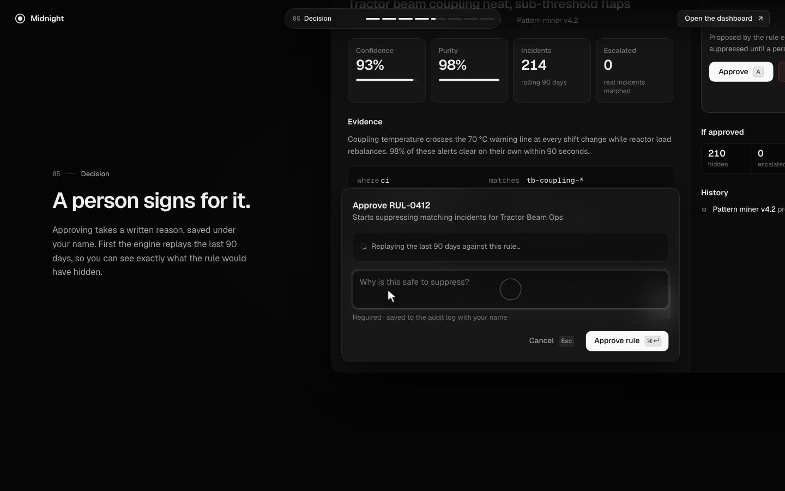
5 · Decision. A pointer approves. The camera leans in while the 90-day backtest runs and the reason types itself.
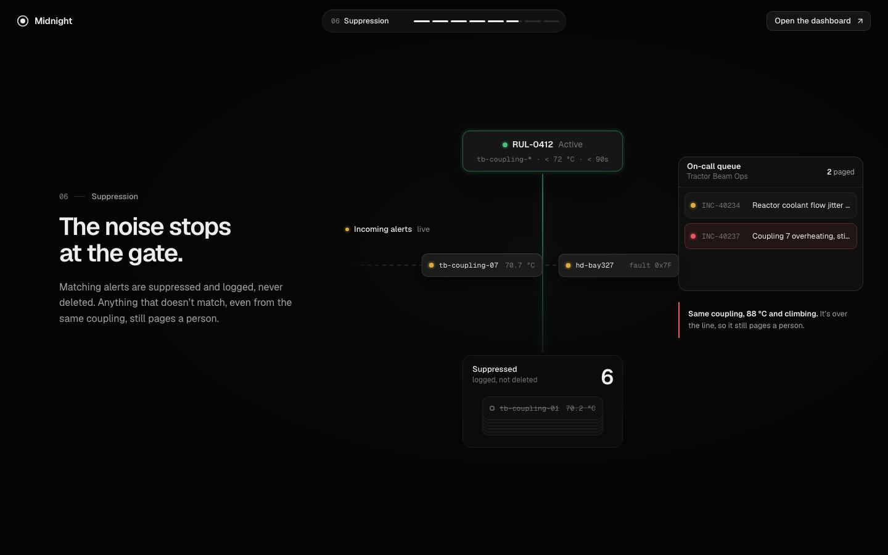
6 · Suppression. The page folds into a gate. Matches drop into the pile; everything else pages a person.
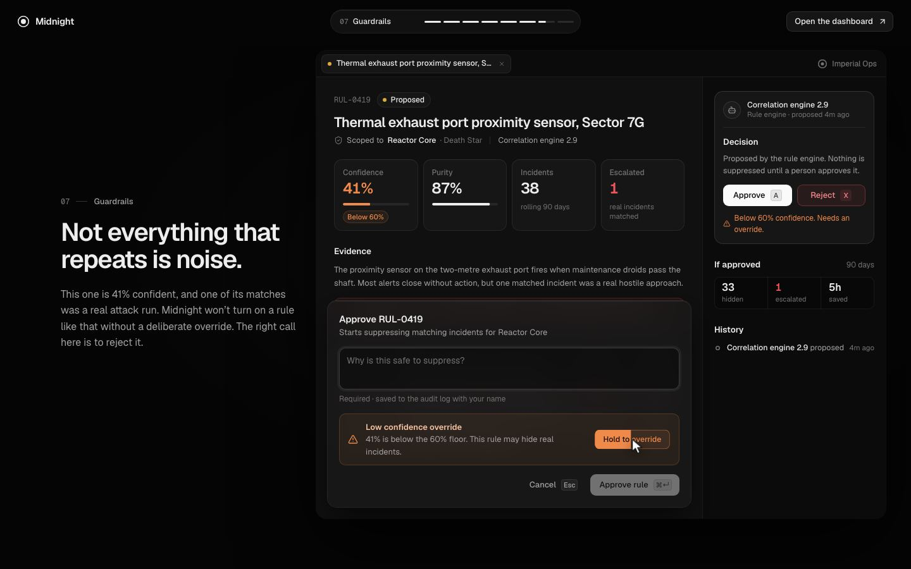
7 · Guardrails. A 41%-confidence rule with a real attack in its evidence. The override hold is started, abandoned, then the rule is rejected.
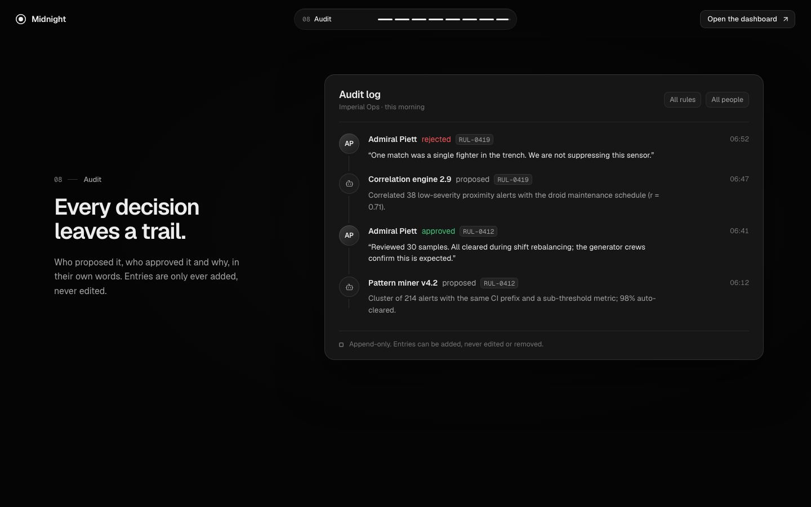
8 · Audit. The log fills in the order it happened, with each person's reason in their own words.
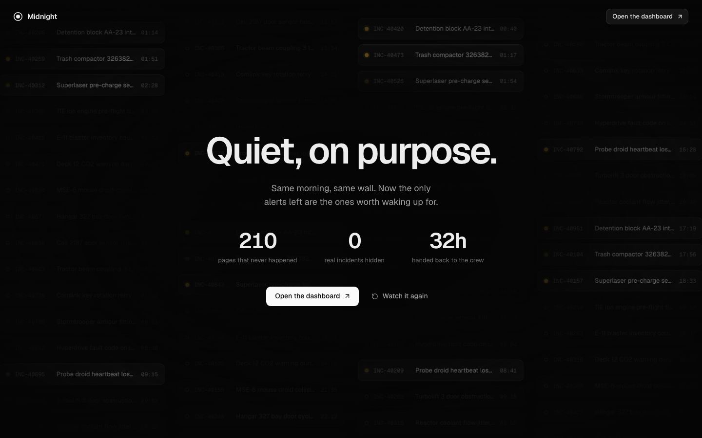
Ending. The same wall from the start, quiet now. The alert we followed is the last to go dark.
?
Why a story, not a feature list
Rule governance is abstract: "patterns become proposals that people approve". Following one concrete alert makes each step feel like a consequence of the one before. That's why every transition physically carries something into the next scene: the ticket becomes a square, the squares pour into the stack, the query flies into the page, and the page folds into the gate.
02
The big idea: scroll is the playhead
Everything else on this page builds on this one idea.
Think of a video editor. There's a timeline with clips on it, and a playhead that says "we're at 12.4 seconds". Our film works the same way, except nothing plays on its own: the scroll bar is the playhead.
You scrollthe page is ~15 screens tall
→
ScrollTriggerpins the screen and turns scroll distance into "time"
→
The timeline63.7 s of choreography, one GSAP timeline
→
The scenesreal HTML, moved with transform + opacity
Pinned: the screen doesn't scroll away. It stays put while the story plays inside it.
Scrubbed: scroll forward and the film moves forward. Scroll back and it rewinds, exactly.
Smoothed:scrub: 1 means the playhead takes about a second to catch up with the scroll bar. That turns jerky mouse-wheel steps into glide.
Live demo · a tiny version of the film. The slider is your scroll bar.
INC-40231Open
Coupling 7 temperature warning
alert firescamera divesticket arrivesclears
Try dragging fast with smoothing on, then off. Off feels mechanical; on feels like a camera operator. That's the whole difference scrub: 1 makes in the real film.
03
One fixed stage
Design once at 1440 × 900, then scale the whole thing to fit any window.
Every scene is laid out on a fixed 1440 × 900 canvas, the "stage". The stage is scaled up or down as one piece to fit the window, like a slide in a presentation. A big monitor gets a bigger slide; nothing inside it moves around.
?
Why this matters so much
The film is full of "fly this thing to exactly where that thing is" moments. If the layout reflowed with the window, every one of those targets would move on every resize, and we'd have to recalculate them all. On a fixed stage, positions never change. We measure them once and they stay right. It also means a designer can reason in plain pixels: "the ticket card sits at x 670, y 178".
04
The camera: scrolling into things
How "you scroll into the ticket" actually works.
There's no real camera. To "fly into" something, we scale up the whole scene and shift it so the thing we care about lands in the middle of the screen. Do that gradually and it looks exactly like a camera pushing in. The new scene then grows up to meet you from behind, so it feels like you went through the old one.
Before: one alert glows in the wall.
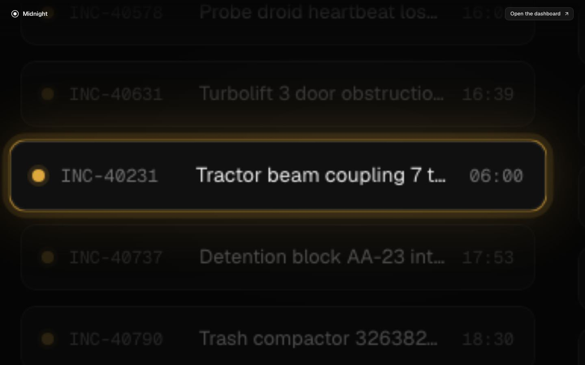
Mid-dive: the wall is scaled ~5× around that alert.
The maths is one line. To put point c of the scene at screen point to while scaling by s, move the scene by to − c × s:
Live demo · click any tile to point the camera at it. Click again to pull back.
The same trick is used four times: diving into the alert (×9), leaning in on the approval form (×1.08, subtle), diving into the new proposal (×3.4), and in reverse at the end, where the wall starts slightly zoomed and settles back to 1.
✓
Its cousin: morph
morph(from, to) in the same file works out the move and scale that lands one box exactly on top of another. It powers the "carry something into the next scene" moments: the ticket shrinking into a single square, and the rule page folding down into the gate.
05
Draw the end, set the start
The one rule that makes scrolling backwards reliable.
Every scene is written in React in its finished state: the ticket already says "Auto-cleared", the counter already says 214, the reason is already typed, the rule is already Active. The timeline then does two things:
At build time, set the start.gsap.set() puts everything back to how it looks before the story reaches it: counter to 0, reason empty, badge on "Proposed".
On scroll, only ever tween forward.tl.to() animates from wherever things are towards the finished state.
What you get
Why
Exact rewinding
GSAP records the start values, so scrolling up replays everything backwards perfectly: counters count down, pills slide back into the lane, the query un-writes itself.
Free still images
The phone and reduced-motion version just renders the scenes without the timeline, and they're already in their finished state. See Phones & reduced motion.
Clean teardown
Everything set by GSAP lives in one useGSAP context. Unmount, and it all reverts to the markup.
06
Anatomy of a chapter
Chapter 5, "A person signs for it", beat by beat.
Each chapter is a function that places tweens on the timeline at exact times. t is when the chapter starts; everything else is t + seconds. Here is the decision chapter drawn as a timeline (hover a bar for details):
captionpointercameraform & typingdecision recorded
✓
Reading it like a script
You can read that code aloud: "the pointer appears, moves to Approve, clicks, the form opens, the camera leans in…". That was the goal of the helpers. The choreography reads like a screenplay, and the fiddly GSAP details live in timeline/kit.ts.
07
Pip, the guide
A small dragon who walks you through the story, and why he's built the way he is.
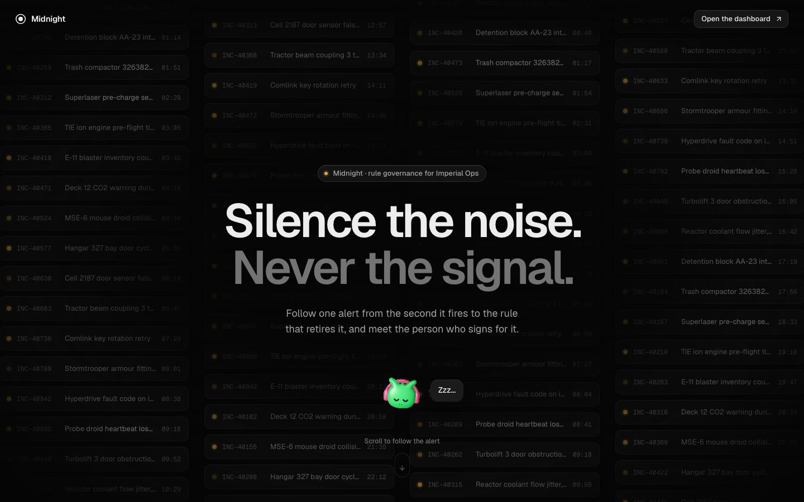
The opening: Pip is asleep. The alert that fires wakes him with a startled flip.
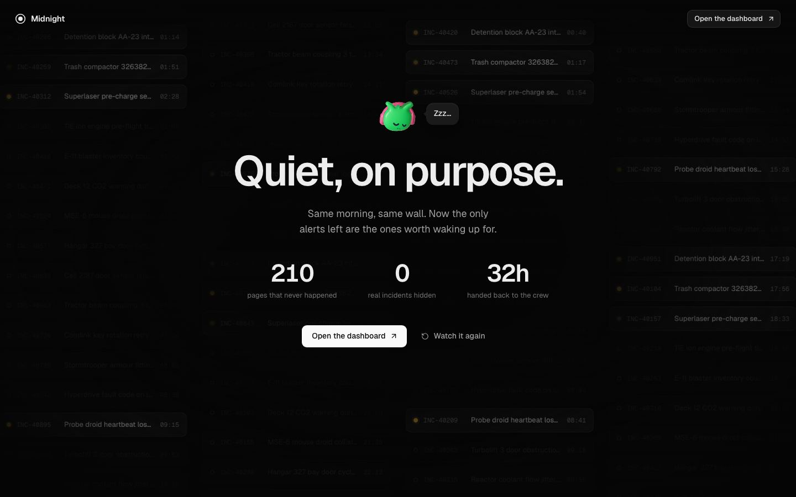
The ending: the wall is quiet, so he goes back to sleep.
Pip is the dragon from our bot-avatars library (code-library/components/bot-avatars), copied into src/vendor/bot-avatars/ so the repo builds on its own. He does three jobs:
Leads the eye. Each chapter he hops to a perch beside the thing that matters: on the ticket's edge, on top of this week's square, on the rule gate, on the audit log. When the product fills the screen, he waits beside the caption.
Sets the mood. The captions explain; Pip reacts, in short asides ("88 °C? That one pages a person."). All of them live in LINES in data.ts.
Shows what the system is doing. He's working (hopping) while the engine mines patterns, during the 90-day replay and while alerts stream through the gate; sleeping at the start and end. He flips when the rule is signed and when the attack-run rule is rejected.
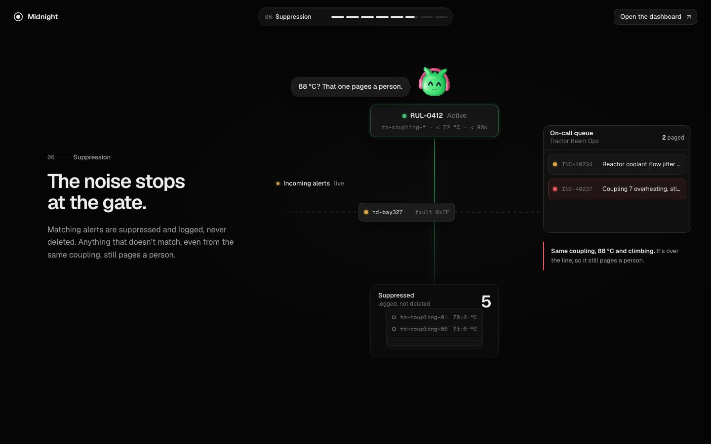
Gatekeeper: Pip on the rule chip while the stream runs.
Two kinds of motion, on purpose
What
How
Why
Where Pip is
Tweens on the master timeline (timeline/guide.ts)
Position is part of the film, so it scrubs and rewinds with everything else.
What he says, his mood, which way the bubble points
Looked up from the playhead's time on every update (guideAt())
Scroll back and he un-says the line exactly. Mood changes are cross-animated by the avatar itself.
His flips
Fired only when the playhead passes the moment going forwards
A celebration shouldn't replay when you scroll back past it.
His idle life
The avatar's own loop: blinking, looking at your cursor, a hop when you click him
He feels alive even when you stop scrolling.
✓
Changing Pip
His words: LINES in data.ts (each line says which scene it belongs to and when it shows, in seconds after that scene starts). His name and avatar type: GUIDE in the same file. Where he sits and when he's busy: timeline/guide.ts. Perches are stage pixels, so a new one is just an { x, y, side }.
?
Why he's hidden from screen readers
The captions already tell the story. Pip's asides would repeat it, and his bubble changes many times a minute while scrolling. So his layer is aria-hidden. In the phone and reduced-motion storyboard he appears as one still line beside each chapter.
08
The toolkit
Eleven small helpers in timeline/kit.ts that every chapter is written with.
Helper
What it does
enter / leave
Fade and lift something into place, or fade, drift and soften it away. Exits are quicker than entrances.
swap
Two things in the same spot (e.g. "Proposed" and "Active" badges): dissolve one into the other with a little blur to hide the seam.
count
Count a number up to the value in the markup.
type
Type text at a steady pace (GSAP's TextPlugin).
press
The tiny scale-down a button gives when clicked.
pointer
A fake cursor with show, move, click (with a ring) and hide. It lives inside the scene, so camera moves carry it too.
captionIn / captionOut
The chapter text on the left. Titles rise line by line from behind a mask (GSAP's SplitText).
box / one / all
Find elements on the stage and measure where they sit.
mark
Record where a chapter starts and ends, for the progress rail at the top.
Beyond core GSAP, the film uses five plugins, all free in the public gsap package: ScrollTrigger (pin and scrub), SplitText (caption lines), ScrambleText (tb-coupling-07 → tb-coupling-*), TextPlugin (typing), DrawSVG (the temperature line drawing itself), plus CustomEase for our curves.
09
Motion rules
The same three curves as the dashboard, so the demo feels like the product.
Movement
Curve
Used for
Arriving or leaving
mn-out · fast start, soft landing
Cards, captions, toasts, anything entering
Travelling on screen
mn-in-out · eases in and out
Camera moves, fly-tos, the pointer
Clocks and machines
none · constant speed
The 74-second timer, typing, alerts riding the lane, the hold-to-override fill
Only transform and opacity move. They're cheap for the browser, so it stays smooth even while scaling a whole scene 9×. Blur is used sparingly, only to hide crossfade seams.
Deliberate things are slow, responses are fast. Holding to override fills over 1.3 s in a straight line; letting go snaps back in 0.2 s. Opening the form takes 0.45 s; closing takes 0.25 s.
Nothing starts from nothing. Things enter from 0.72–0.97 scale, never from zero.
Idle life is tiny. Only status dots breathe and the spinner turns, and only when motion is allowed.
10
Phones & reduced motion
Same story, no scroll-linked motion.
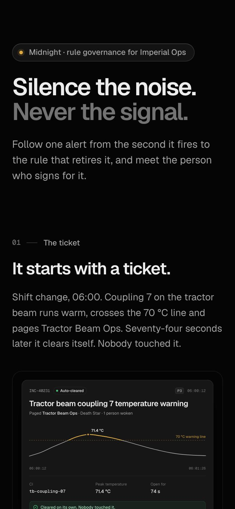
The storyboard on a 390px phone.
If the window is narrower than 900px, shorter than 560px, or the person has asked their system for reduced motion, src/App.tsx renders the storyboard instead of the film:
Each chapter's caption, then a still frame of its scene.
The stills are the same scene components, cropped and scaled. Because they're drawn in their end state (see 05), no extra work was needed.
Nothing moves when you scroll. It's a normal page.
?
Why not just shrink the film?
Big camera moves tied to scrolling can make some people feel sick, which is exactly what reduced motion asks us to avoid. And on a phone the 1440 × 900 stage would be too small to read. A calm, readable page beats a tiny film.
11
Project map
Where things are in midnight-story/src/.
App.tsxfilm where there's room and motion is welcome, storyboard otherwiselib/
├── gsap.ts GSAP + plugins registered once · the three curves
├── geometry.ts stage size · focus() (camera) · morph() (fly-to)
└── path.ts smooth line for the temperature chartstory/
├── data.ts every word and number in the story ← start here to edit copy
├── Film.tsx pin, scale-to-fit, progress rail, first-load intro
├── Storyboard.tsx the static version
├── Captions.tsx · TopBar.tsx
├── Guide.tsx Pip: the dragon and his speech bubble
├── scenes/one component per scene, drawn in its END state
│ ├── Wall · Hero · Outro
│ ├── Ticket · Recurrence · Pattern
│ ├── RulePage RUL-0412 (approved) and RUL-0419 (rejected) share it
│ └── Gate · Audit · Cursor
└── timeline/the choreography: one master timeline
├── kit.ts the helpers
├── opening.ts hero → ticket → recurrence
├── middle.ts pattern → rule → decision
├── closing.ts suppression → guardrail → audit → outro
├── guide.ts Pip's perches, moods and flips
└── index.ts runs the chapters in order
data.tswords and numbers
→
scenes/what things look like when finished
→
timeline/how and when they get there
→
Film.tsxties it to the scroll bar
12
How to change things
Common edits, from easiest to hardest.
I want to…
Do this
Change any wording
Edit story/data.ts. Captions, alert names, the reasons people type, the audit log and the ending numbers all live there.
Make the whole film longer or shorter
Change SCROLL_PER_SECOND in Film.tsx (now 0.24 screens per second). Bigger = more scrolling = slower.
Give one beat more time
In that chapter's function, raise the numbers after it (t + 2.4 → t + 2.8…) and the chapter's final s.t = t + …. Later chapters shift automatically.
Restyle a scene
Edit its CSS next to it in scenes/. Style the finished look; the timeline handles the rest.
Move something on the stage
Change its position in CSS. Fly-tos and camera moves measure the DOM, so they follow automatically.
Add a chapter
Add its caption to CHAPTERS in data.ts, a scene component (end state), a chapter function that follows the two rules in 05, and call it in timeline/index.ts.
✓
Seek straight to any moment
In dev, open the browser console: __film.marks lists every chapter's start and end time, and __film.tl.duration() the total. Handy for checking one beat without scrolling through the whole film.
13
How we checked it
Scroll films break in the middle of transitions and on the way back up. We tested both.
Seek and screenshot. A Playwright script opened the page, jumped the scroll to 40+ exact timeline times (including mid-transition), and saved a screenshot of each. That's how every image on this page was made.
Rewind test. Jump to the very end, then scroll back to earlier chapters. Counters, alert positions, typed text and the scrambled query must all be back where they started.
Fallbacks. Loaded at 390px and with reduced motion on, and checked the storyboard renders.
Console and build. No errors or warnings anywhere in the run, and npm run build type-checks and builds cleanly.
!
What screenshots can't tell you
Pacing and feel. Whether a transition is too fast or a pause too long can only be judged by scrolling it yourself, ideally on a trackpad and a mouse wheel, and again the next day with fresh eyes.
14
Gotchas we hit
Worth knowing before you add to it.
Gotcha
What happens · the fix
Measuring before fonts load
Every position is a few pixels off, so fly-tos miss. · The timeline is built only after document.fonts.ready.
fromTo late in the film
GSAP applies a fromTo's start values immediately, so the ending's wall would appear during the opening. · Pass immediateRender: false, or stick to gsap.set + tl.to.
Changing React's DOM by hand
Adding or removing elements React owns can break re-renders. · Put the needed wrappers in the JSX (e.g. <span class="cmp-n"> around a number) and only animate them.
Scheduling vs setting
A helper like swap(…, 0)plays at time 0; it doesn't just set a starting state. · Use gsap.set for starting states.
Fading a parent fades its children
To fade a card but keep the query inside it, fade the card's background, not the card. · See the pattern → rule transition.
Zoomed layers look soft
will-change: transform keeps the wall smooth at 9× but blurs its text while zoomed. · Fine here, because it's fading out as it zooms. Don't use it on anything that should rest zoomed in.
15
Glossary
GSAP
The animation library everything is built with.
Tween
One animation: "move this from here to there over 0.6 s".
Timeline
Many tweens placed at set times, played as one. Ours is 63.7 s long.
Playhead
The current time on the timeline. Here it's controlled by scrolling.
ScrollTrigger
The GSAP plugin that links a timeline to scrolling.
Pin
Hold an element still on screen while the page scrolls past.
Scrub
Move an animation forwards and backwards with the scroll bar, rather than just starting it.
Ease / curve
How speed changes during a movement: fast then slow, slow-fast-slow, or constant.
Stage
Our fixed 1440 × 900 canvas, scaled to fit the window.
Focus / camera
Scaling and shifting a scene so one element fills the screen.
Morph / fly-to
Moving one element exactly onto another's position and size.
autoAlpha
GSAP's opacity that also hides the element fully at 0, so hidden things can't be clicked or tabbed to.
Pip
The dragon who guides you through the film. Bot-avatars’ dragon type.
Storyboard
The static fallback for phones and reduced motion.